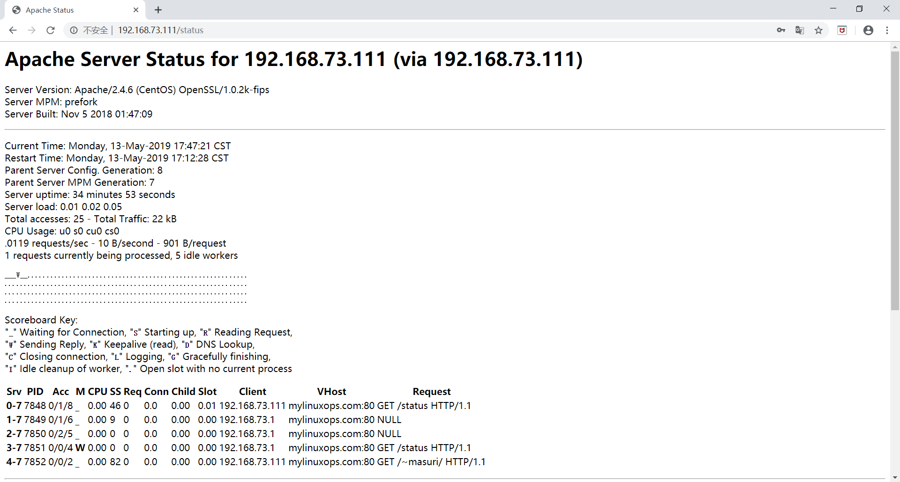

httpd基本配置和参数
本节将讲述httpd的相关配置文件以及一些常见配置的使用方法
一、httpd相关的文件和目录
1 | /etc/httpd/conf.modules.d #此目录存放了模块的配置文件，模块是否启用 |
二、httpd的帮助文档包
安装httpd-manual，启动httpd服务口可以在本地查看httpd相关的帮助
1 | [root@localhost ~]# yum install httpd-manual -y |
三、httpd常见配置
httpd安装后启动服务，并配置为开机自动启动
1 | [root@localhost ~]# systemctl enable httpd |
1.ServerTokens
配置服务器响应报文头部中显示服务器类型和版本号
| 可用选项 | 说明 |
|---|---|
| Full | 显示所有信息 |
| Prod | 显示类型 |
| Major | 显示类型，主版本号 |
| Minor | 显示类型，主版本号，次版本号，跟新次数 |
| OS | 显示类型，主版本号，次版本号，跟新次数，系统类型 |
示例：
Prod在实际生产环境中显示的越少越好，如果要不显示需要对代码修改
1 | [root@localhost ~]# vim /etc/httpd/conf/httpd.conf |
2.Listen
监听的端口和地址，可以监听在多各端口和地址上，需要写多行
| 选项 | 说明 |
|---|---|
| Listen PORT | 监听所有地址的某端口 |
| Listen IP:PORT | 监听所有地址的ip和端口 |
示例：
1 | [root@localhost ~]# vim /etc/httpd/conf/httpd.conf |
3.KeepAlive
持久连接，此选项默认开启，需要和KeepAliveTimeout结合使用
KeepAlive选项
| 选项 | 说明 |
|---|---|
| On | 开启 |
| Off | 关闭 |
KeepAliveTimeout num[ms]超时时长默认为5秒
示例：
1 | [root@localhost ~]# vim /etc/httpd/conf/httpd.conf |
4.DocumentRoot “/path”
定义网页文档存放路径
文档路径映射，指向的路径为URL路径的起始位置，默认路径为”/var/www/html”在http2.2上只需修改此项就能访问，2.4以上修改后还需要对目录授权。
示例：将映射路径指向别处
1 | [root@localhost ~]# vim /etc/httpd/conf/httpd.conf |
5.DirectoryIndex 定义站点主页面
1 | DirectoryIndex index.html #当访问某网站时不需要指定文件，默认找index.html |
6.站点的访问控制机制
可以基于两种机制指明对哪些资源进行何种访问控制。
访问控制机制有两种，可以基于客户端来源地址和用户账号。
可以进行访问控制的资源：
文件系统路径：
1 | <Directory "/path"> |
URL路径
1 | <Location ""> |
7.对资源的访问控制
7.1 Options
options后面跟了1个或多个以空白字符分割的选项列表在选项前+，—表示增加或删除指定选项，该选项会应用在目录下的所有子目录，若子目录中有AllowOverRide选项则会由AllowOverRide中定义的选项来覆盖当前的选项。
| options | 说明 |
|---|---|
| all | 全部允许 |
| none | 全部禁用 |
| indexes | 要访问的URL路径下不存在与定义的主页面资源相符的资源文件时，返回索引列表给用户 |
| FollowSymlinks | 允许访问符号连接文件所指向的源文件 |
生产中不建议将indexes启用有安全风险
示例：
1 | <Directory "/data/html"> |
1 | <Directory "/data/html"> |
1 | <Directory "/data/html"> |
7.2 AllowOverRide
这个功能需要在目录下创建一个.htaccess的文件，在文件中定义启用哪些访问控制选项，然后使用allowoverride来启用这些选项或禁用这些选项，.htaccess中的选项启用之后会覆盖之前的配置指令
| 选项 | 说明 |
|---|---|
| all | .htaccess中所有指令都有效 |
| none | .htaccess中所有中指令都无效 |
| AuthConfig |
示例：
1 | [root@localhost html]# cat /data/html/.htaccess |
7.3 基于ip的访问控制
无明确授权的目录，默认拒绝
Require all granted:允许所有访问
Require all denied:拒绝所有访问
1 | <Directory "/data/html"> |
控制特定的IP访问
Require ip IPADDR:授权指定的IP访问
需要将其嵌套在<requireany>…<\requireany>之内定义，先将所有访问拒绝，再允许某ip访问
1 | <Directory "/data/html"> |
Require not ip IPADDR:授权特定ip拒绝访问
需要将其嵌套再<requireall>…<\requireall>之内定义，允许所有访问，然后拒绝某ip访问
1 | <Directory "/data/html"> |
控制特定的主机访问
用法与控制ip相同
Require host HOSTNAME:授权特定主机访问
Require not host HOSTNAME:拒绝特定主机访问
HOSTNAME可以时特定的主机（FQDN），或指定域名下的所有主机（domin.tld）
8.日志设定
日志分为访问日志和错误日志
1 | /var/log/httpd/error_log #错误日志 |
8.1错误日志
错误日志的默认级别为 warn
1 | [root@localhost ~]# vim /etc/httpd/conf/httpd.conf |
8.2访问日志
在配置文件中定义了可选的各种访问日志格式，可以以选用配置文件中定义的格式也可以自定义访问日志格式。
访问日志需要定义2行
1.Logformat 日志格式 定义名
2.Customlog 定义名
其中格式有多各字段组成
| 字段 | 定义 |
|---|---|
| %h | 客户端的IP地址 |
| %l | 远程用户，启用mod_ident才有效，通常为”-“ |
| %u | 验证远程用户，登陆访问时显示，非登录访问时显示”-“ |
| %t | 访问的时间，为GMT时间 |
| %r | 请求的方法，url及版本号 |
| %>s | 相应状态码 |
| %b | 相应报文大小 |
| %{Referer}i | 从哪个连接跳转来 |
| %{User-Agent}i | 使用的什么浏览器 |
1 | #配置文件中定义格式 |
9.AddDefaultCharset
设定默认字符集
1 | [root@CentOS6 ~]# vim /app/httpd24/conf/httpd.conf |
10.alias
定义路径别名
1 | [root@CentOS6 ~]# vim /app/httpd24/conf/httpd.conf |
11.用户的访问控制
用户的访问控制分为两步
11.1认证质询
认证质询：WWW-Authenticate
响应码：401
先拒绝客户端请求，说明需要客户端提供账号和密码。
11.2认证
认证Authorization
客户端将账号和密码填入后再次发送请求报文，通过认证，则服务器发送相应的资源
认证的方式分为两种：
basic:明文
digest:消息摘要
11.3安全域
需要用户认证后方能访问的路径；应该托管过名称对其进行表示，以便于报纸用户认证的原因
11.4用户的账号和密码
用户的账号用来访问某服务时用到的认证标识
账号和密码可以存放在文本中，sql数据库中，ldap目录，nis等存储中
用户和账号使用htpasswd命令生成
1 | htpasswd [OPTIONS] /PATH/TO/HTPASSWD_FILE username |
| options | 说明 |
|---|---|
| -c | 自动创建文件，在第一次创建用户时使用，反复使用会覆盖之前的用户 |
| -p | 使用明文密码 |
| -m | 使用md5加密格式 |
| -d | CRYPT格式加密（默认） |
| -s | sha格式加密 |
| -D | 删除指定用户 |
示例：
基于用户的验证
一、指定哪些用户可以访问
1.创建4个用户
1 | [root@localhost ~]# htpasswd -c /etc/httpd/conf.d/.htpasswd tom |
2.修改.htpasswd的权限
1 | [root@localhost ~]# chmod 600 /etc/httpd/conf.d/.htpasswd |
3.修改配置文件
1 | [root@localhost ~]# vim /etc/httpd/conf.d/test.conf |
4.重启服务测试
1 | [root@localhost ~]# systemctl restart httpd |
二、指定列表内的所用用户都可以访问
1.修改配置文件
1 | [root@localhost ~]# vim /etc/httpd/conf.d/test.conf |
2.重启读配置文件测试
1 | [root@localhost ~]# systemctl reload httpd |
基于组的访问控制
在基于用户的访问控制基础上，还能进行基于组的访问，将用户进行分组，让某些组内的成员可以访问。首先需要定义一个组名和组成员相对应的文件，然后在配置文件中授权。
示例：
1.创建组成员对应关系的文件
1 | [root@localhost ~]# vim /etc/httpd/conf.d/group |
2.修改配置文件
1 | [root@localhost ~]# vim /etc/httpd/conf.d/test.conf |
3.重读配置文件测试
1 | [root@localhost ~]# systemctl reload httpd |
其他认证
远程客户端和用户验证的控制
satisfy ALL|ANY
|参数|说明|
|all|客户端的IP和用户验证都通过才能访问|
|any|客户端的IP和用户验证有一个通过就能访问|
示例：
1 | [root@localhost ~]# vim /etc/httpd/conf.d/test.conf |
12.共享家目录
要共享家目录需要开启模块mod_userdir.so
1.查看模块是否开启
1 | [root@mylinuxops ~]# httpd -M | grep userdir |
2.修改与家目录相关的配置文件
1 | [root@mylinuxops ~]# vim /etc/httpd/conf.d/userdir.conf |
3.创建public_html目录
1 | [root@mylinuxops ~]# mkdir /home/masuri/public_html |
4.重读配置文件测试
1 | [root@mylinuxops ~]# curl -L 192.168.73.111/~masuri |
安全相关
共享家目录时需要认证登陆，否则谁都能够登陆不够安全
1.在家目录下创建.htaccess文件
1 | [root@mylinuxops ~]# vim /home/masuri/public_html/.htaccess |
2.创建可以用于认证的用户
1 | [root@mylinuxops ~]# htpasswd -c /home/masuri/public_html/.htpasswd masuri |
3.修改userdir的配置文件
1 | [root@mylinuxops ~]# vim /etc/httpd/conf.d/userdir.conf |
3.重读配置文件测试
1 | [root@mylinuxops ~]# curl -L 192.168.73.111/~masuri #不使用账户名和密码登陆 |
13.ServerSignature
当客户请求的网页不存在时，服务器将产生错误文档，如果打开了ServerSignature选项，错误文档的最后一行将包含服务器的名字、Apache的版本等信息，如果不对为显示这些信息，就可以将这些参数设置为off，设置为Email，将显示ServerAdmin的Email提示
14.status页面
要查看服务器的状态页面，需要加载mod_status.so模块
1 | [root@mylinuxops ~]# httpd -M | grep status |
修改配置文件
1 | [root@mylinuxops ~]# vim /etc/httpd/conf/httpd.conf |
重启服务访问

注意：此页面最好也进行认证登陆
15.httpd的压缩
网络上的CDN是根据流量来收费的，所以数据需要进行压缩，从而来节省成本
压缩需要mod_deflate模块
1 | [root@mylinuxops ~]# httpd -M | grep deflate |
适用场景：
(1)节约带宽，额外消耗CPU；同时，可能有些较老浏览器不支持
(2) 压缩适于压缩的资源，例如文本文件
1 | LoadModule deflate_module modules/mod_deflate.so |